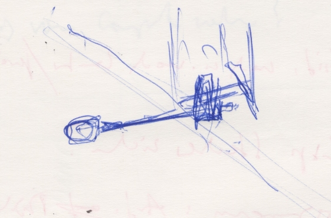

Peter Ablinger – OUTSIDE &
5.9.2020
Bluklein
Cesena
17.00–19.00
Peter Ablinger: instrument/s and outside microphone, any duration (2015–2018).
Realizzazione a cura di Enrico Malatesta.
Estratto dalla partitura / istruzioni:
"All'esterno è installato un microfono, che trasmette il rumore esterno verso l'interno. Nella sala ci sono uno o più strumentisti che improvvisano con i suoni esterni in modo mimetico, ovvero con l'intento di confondersi e raddoppiare il più possibile il rumore esterno. Lo strumentista sente il segnale del microfono attraverso le cuffie, mentre in sala, dagli altoparlanti, il suono esterno viene diffuso con un ritardo di 0,7 secondi."
Bluklein – Via Vescovado 5, Cesena
La realizzazione, ospitata negli splendidi spazi di Bluklein nel centro storico di Cesena, ha una durata di 2 ore senza interruzioni.